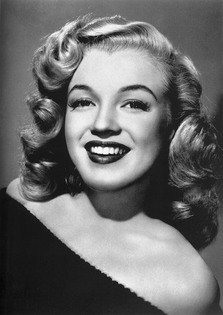

THE DIFFERENCE BETWEEN FADES, TAPERS, AND BLENDS
At POPULARITY SALON we do more than haircuts. We also offer a range of services from relaxing tea tree scalp massages to waxing services. Not happy with your current hair color? We’ll change it for you with our full-color, highlights, or gray-blending services.
From easy-to-understand styling tips to the latest in hair care products, POPULARITY SALON is here to help you get a look you'll love.
Your visit begins with a consultation with one of our expert stylists to discuss your needs, and results in a recommendation of the right men's haircut or women's hairstyle for your face shape, lifestyle, and preferences.
Your Supercolor service begins with a consultation with one of our expert stylists, who will assess your skin tone and condition of your hair, and discuss the results you want to achieve. We view hair color as more than changing your hue, we believe it truly accents your cut and brings out your best features.
Our stylists are happy to give you useful tips for maintaining your look at home and work with you to create a custom look that expresses your individual style.